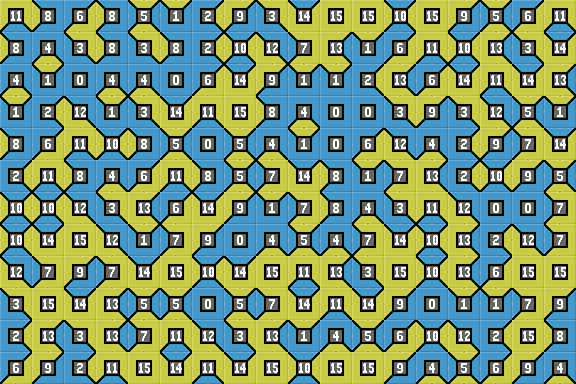

Introduction
Wang tiles were first proposed by mathematician, Hao Wang in 1961. A set of square tiles, with each tile edge of a fixed color, are arranged side by side in a rectangular grid. All four edges of each tile must 'match' (have the same color as) their adjoining neighbor.
The tiles never overlap and usually all spaces (cells) in the grid are filled. Tiles have a 'fixed orientation', they are never rotated or reflected (turned over).
With careful tile design, a complete array can produce a large image without visual 'breaks' between tiles. This helps computer game designers create large tiled backgrounds from a small set of tile images.
Edge matching Wang tiles tend to produce path or maze designs. A second type of tile set are corner tiles. These are matched by their corners and tend to produce patch or terrain designs.
Read more about Wang Tiles at Wikipedia.
Wang Tileset
Here is a set of Wang tiles. You can see that every tile has two different types of edge; blue or yellow. This gives 2x2x2x2 (written as 2^4), or 16 possible combinations. Hence the complete set contains 16 different tiles.
| 0 | 1 | 2 | 3 | 4 | 5 | 6 | 7 | 8 | 9 | 10 | 11 | 12 | 13 | 14 | 15 |
The set is said to be 'complete' as it includes a tile for every possible combination of two edges. We can use these tiles to fill a grid where all tile edges match.
Bitwise Tile IndexWith some bitwise maths, we can compute a unique 'index' number for each tile. Yellow North = 1 Blue edges are ignored. |
This tile has yellow edges North(1) and West(8). Adding up gives a tile index of '9'. |
4x4 LayoutThe complete tileset of 16 tiles can be arranged in a convienient 4x4 layout. All tile edges match and all border edges are '0' blue. More 2-edge tilesets can be seen here. |
|
Random Wang Tile Array
We arrange Wang tiles in a grid array. For each position, a tile is selected at random from the tileset, always ensuring that all edges match adjacent tiles.
See Path Tiles for more info, images and interactive Stagecast sim.
See Stage for random tile arrays.
Stage: Random 2-edge Wang Tiles
